LOCATION PHOTOGRAPH ARCHIVE
Bill Barvin
Over 3,000 35mm negative strips and 1,000 print photographs related to Barvin's career as a location manager and scout for television, film, and video projects filmed in New York and New Jersey as well as Connecticut and Pennsylvania and arranged into series primarily by location. Images are of interiors of occupied and unoccupied apartments, lofts, homes, businesses, schools, churches, theaters, laundromats, factories, warehouses, and offices along with exteriors of properties as well as street views of larger exterior locations. Series contains photographs that were taped or glued together into manila folders to create a detailed view of the location. The collection also includes one box of production documentation materials.
 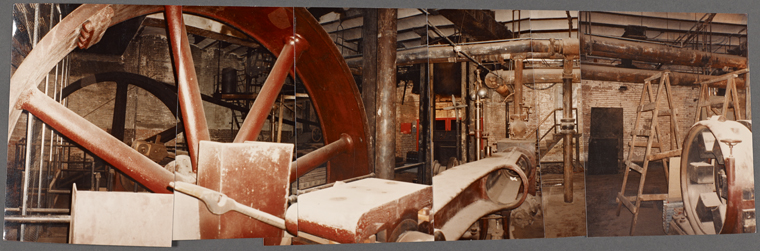
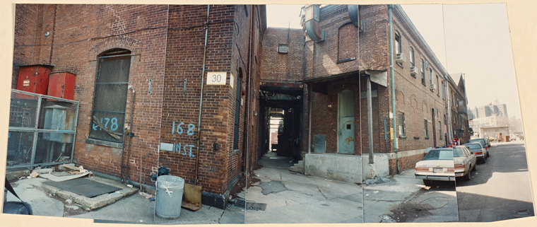
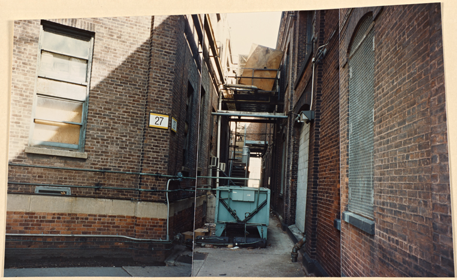
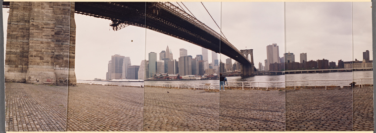
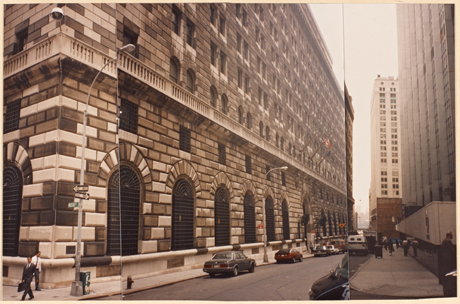
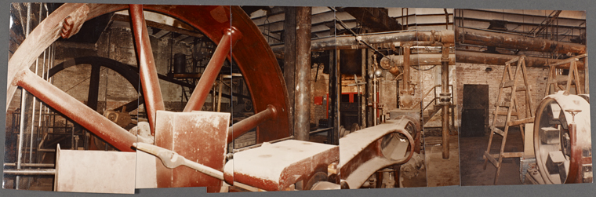
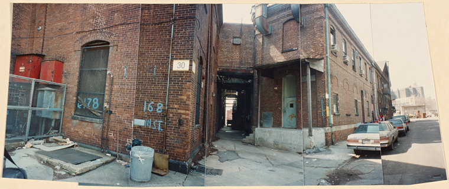
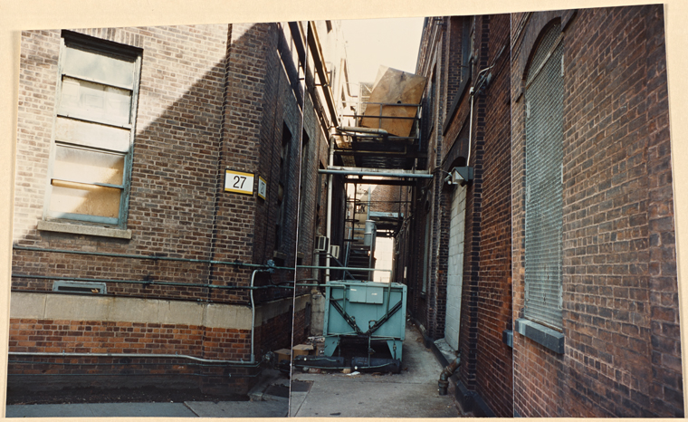
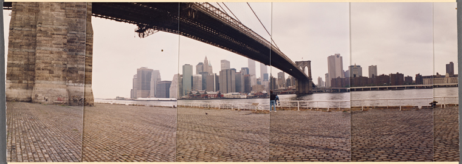
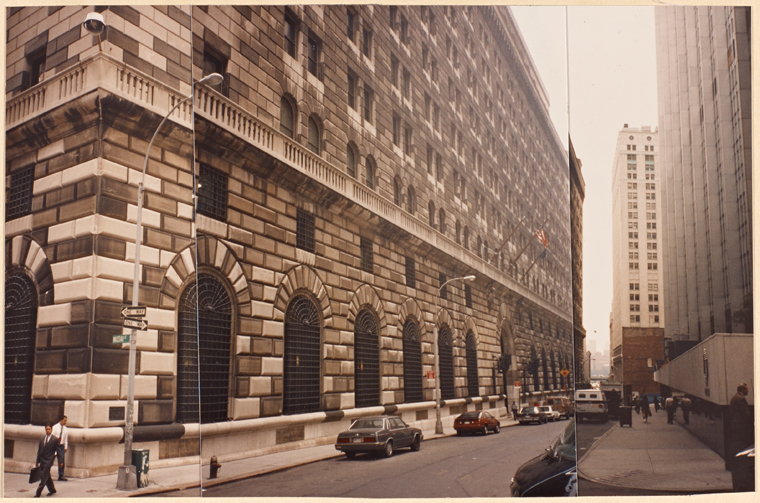
 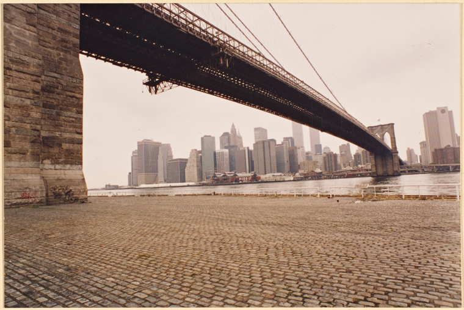
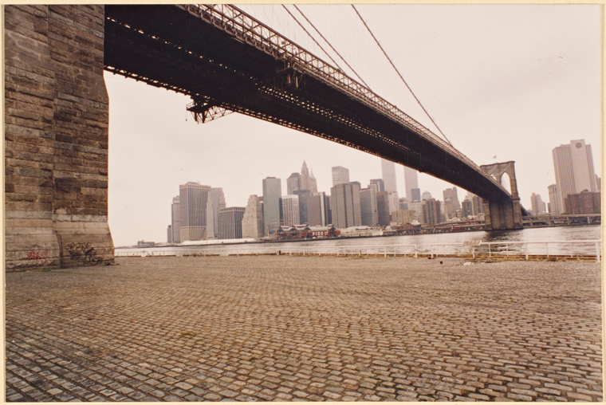